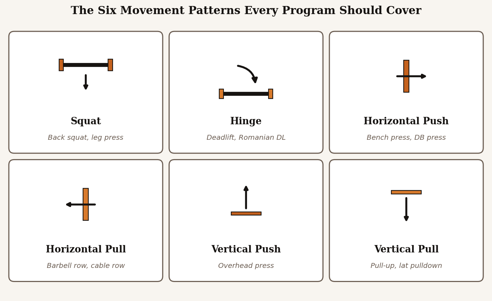

Exercise Selection
A good program is not about picking the most exercises. It is about picking the right ones. The goal here is to build a small, deliberate menu of movements that train each muscle group through its full range of motion with loads you can actually progress on.
Compound vs Isolation: Pick Both
Compound exercises (squat, deadlift, bench press, overhead press, row, pull-up) train multiple muscle groups at once and let you load heavy weight. They are the foundation of any hypertrophy program because they let you get a lot of high-quality work done in a small number of sets.
Isolation exercises (curls, lateral raises, leg extensions, tricep pushdowns, calf raises) train a single muscle group through a more focused range of motion. They are how you fill in the gaps the compounds leave. A pulling compound trains your back, but if your biceps are a weak link you will still need direct biceps work to grow them.
The honest answer to "compound or isolation" is "yes, both." Build the program around two or three compounds per session, then add isolation work for whichever muscles you want to prioritize.
Training Variables by Experience Level
The three key variables — sets per muscle per week, rep range, and rest between sets — should scale with how long you have been training. Beginners can grow on almost anything because the stimulus is so novel. Intermediates need more total volume and a wider rep range. Advanced lifters need the most volume and the longest rest periods to recover from heavy compound work.
The table below summarizes a sensible starting point for each experience level. These ranges come from evidence-based programming literature and serve as defaults, not rules. Adjust based on how you recover.
| Experience Level | Sets per Muscle / Week | Rep Range | Rest Between Sets |
|---|---|---|---|
| Beginner (0–1 year) | 10–12 sets | 8–12 reps | 90–120 seconds |
| Intermediate (1–3 years) | 12–18 sets | 6–12 reps | 2–3 minutes |
| Advanced (3+ years) | 15–22 sets | 5–15 reps | 3–5 minutes (compounds) |
Sets are counted as "hard sets" — working sets taken within one to three reps of failure. Warm-up sets do not count.
The Case for Free Weights First
Machines are great for adding volume safely once the bigger lifts are programmed. But for the majority of your training, free-weight compounds should anchor the session. They train stabilizing muscles, allow a more natural movement path, and give you a longer runway for progress because you can keep adding weight in smaller increments than most pin-loaded machines allow.
This does not mean every workout has to start with a barbell. Dumbbell work, cables, and well-designed machines all have a place. The point is that free-weight compounds should be the heaviest, most central lifts in your program, with everything else built around them.
A Sample Movement Menu
Below is one example of a compact movement menu that covers every major muscle group with overlap that is helpful, not redundant. You do not need every exercise on this list in every program. Pick one or two from each category for a given training block.
- Squat pattern: back squat, front squat, leg press, hack squat
- Hinge pattern: conventional deadlift, Romanian deadlift, hip thrust, back extension
- Horizontal push: bench press, incline dumbbell press, machine chest press
- Horizontal pull: barbell row, chest-supported row, seated cable row
- Vertical push: overhead press, dumbbell shoulder press
- Vertical pull: pull-up, lat pulldown
- Isolation: biceps curl, triceps extension, lateral raise, leg curl, calf raise

What's Next
Picking the right exercises is half the battle. The other half is putting them in the right order, on the right days, with the right number of sessions per week. Head over to Programming to see how to build the actual weekly schedule.